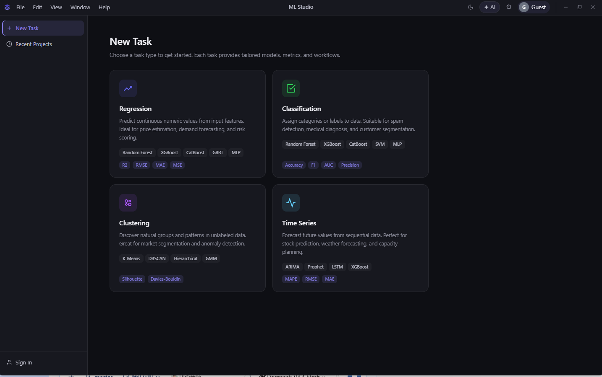

回归
从特征预测连续数值，适合价格估算、需求预测、风险评分。
Random ForestXGBoostCatBoostGBRTMLP
R²RMSEMAEMSE
本地优先 · 桌面端机器学习工作台
ML Studio 把数据导入、模型选择、超参数搜索、训练监控和报告导出收进同一个窗口。 不用写训练脚本，也不把数据传到别人的服务器。

能力
选定任务类型后，模型池、评估指标、默认参数都会跟着切换，不必自己拼装。
从特征预测连续数值，适合价格估算、需求预测、风险评分。
给样本打上类别，适合垃圾信息识别、诊断辅助、客户分群。
在没有标签的数据里找自然分组，适合市场细分、异常发现。
从序列数据预测后续走势，适合销量、气象、容量规划。
工作流
每一步的产物都留在同一个项目里，回头改参数或重跑都不用重新装配环境。
拖进 Excel 或 CSV，列类型与缺失情况自动读出来。
回归 / 分类 / 聚类 / 时序，模型池与指标随任务切换。
内置 TPE、贝叶斯等搜索器，试验次数自己定，也可只跑单组参数。
实时日志与优化进度同屏，可中断，下次接着跑。
一键导出 HTML、PDF、Word 三种格式的实验报告。
实验报告
报告不是把数字堆在一起。每个指标都带一句"怎么读"，指标卡按质量分色—— R² 是优秀还是过拟合，不用自己去对照阈值。
下面是根据实际报告模板绘制的结构示意。
插件
模型和搜索算法都能做成插件接入。插件是独立目录，不碰核心代码，删掉即回退。
model.py 提供适配器，tuner.py 提供搜索策略requirements.txt 单独安装，不污染主环境plugin.json 声明任务类型、参数字间与入口已内置 PINN 等自定义模型的接入样例。
{
"schema_version": "1.0",
"id": "acme.random-forest",
"name": "ACME Random Forest",
"version": "1.0.0",
"type": "model",
"task_types": ["regression", "classification"],
"entrypoint": "model:ModelPlugin",
"parameters": {
"n_estimators": { "type": "int", "low": 100, "high": 1000 },
"max_depth": { "type": "int", "low": 2, "high": 32 }
}
}桌面端
一个本地服务加一层桌面外壳，联网只为查文档，训练不依赖云端。
上传即读本地文件，没有远端存储，也没有隐性的数据上传。
断网照样能跑完一轮训练并导出报告，适合内网与现场环境。
训练中断后重新打开，能在原任务上继续，不必从头再跑。
两套配色都按 WCAG AA 校准过对比度，长时间看不刺眼。
界面语言可切换，术语与报告措辞同步，不用两套习惯。
结果看不懂时，可以在侧栏直接问，不必切出去翻文档。